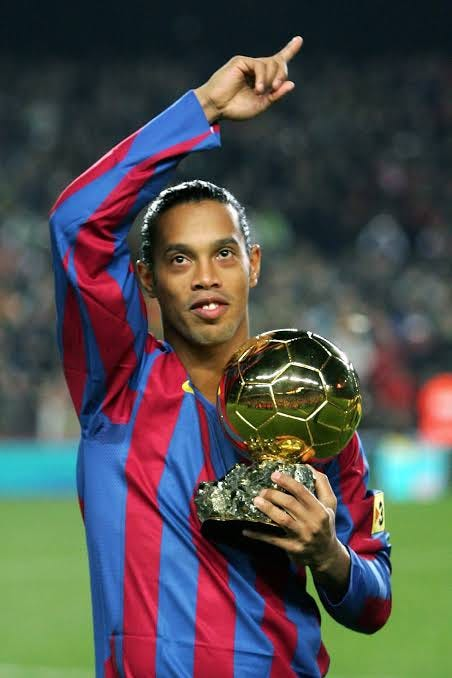
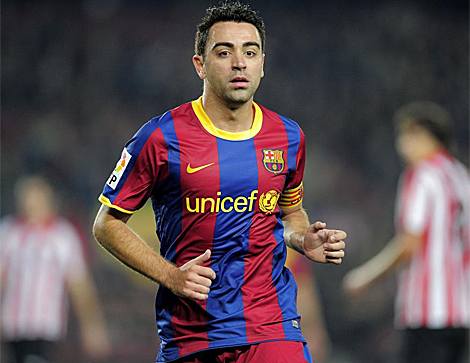
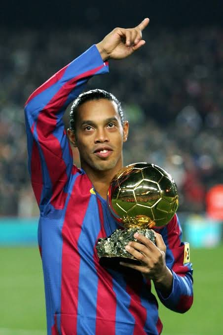
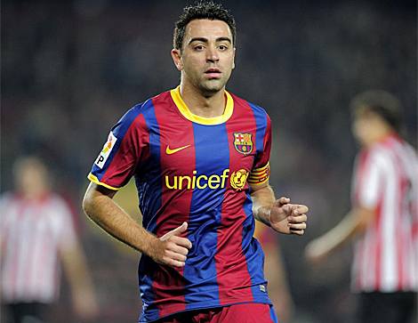

El Fútbol Club Barcelona fue fundado en 1899 por el suizo Hans Gamper y un grupo de aficionados, convirtiéndose en un símbolo de Cataluña. El club atravesó épocas doradas en las décadas de 1920, 1950 y en la era de Johan Cruyff en los años 70 y 90. Tras la dictadura franquista, recuperó su nombre y escudo originales, y se consolidó como uno de los clubes más influyentes del mundo, con hitos como la «temporada de las cinco copas» y la inauguración del Camp Nou.
A partir de la temporada 2008/09, bajo la dirección de Josep Guardiola el equipo tomó nuevas energías. Siguiendo el estilo que había iniciado Cruyff, Guardiola fue un firme defensor del modelo deportivo de la cantera y contó desde el comienzo con estos jóvenes jugadores para formar su equipo, que resultó el mejor de la historia del Barça.
El Barça había batido récords históricos, había jugado partidos memorables y había ganado los títulos más destacados. Pero el momento culminante del equipo de Guardiola llegó en la final de Wembley del 28 de mayo de 2011, donde hipnotizó con su juego y deslumbró al mundo con un fútbol de ensueño. La prensa mundial elogió el juego de este Barça y se rindió a la excelencia de un equipo que escribía una de las páginas más brillantes de la historia del fútbol. La etapa Guardiola acabó el año 2012, pero el Barça siguió atesorando éxitos con Tito Vilanova (Liga 2012/13), con Luis Enrique, que en 2015 tocó la gloria futbolística con la conquista del triplete: Liga, Copa y Champions, y con Ernesto Valverde y su doblete Liga-Copa de la temporada 2017/18
La temporada de su debut, Guardiola consigue los tres títulos en juego. Y luego empieza la campaña 2009/10 sumando más victorias hasta convertir al Barça en el equipo de las Seis Copas (Copa, Liga, Champions, Supercopa de España, Supercopa de Europa y Mundial de Clubs), conseguidas en el año natural de 2009. Y sigue triunfando. Los éxitos se suceden hasta conseguir un palmarés impresionante: en cuatro temporadas como técnico gana un total de 14 títulos de los 19 a los que aspiraba el equipo. Guardiola se convierte en un referente incontestable del fútbol mundial. Su Barça traspasa el ámbito estrictamente deportivo y es observado también desde otros ámbitos sociales.

 


